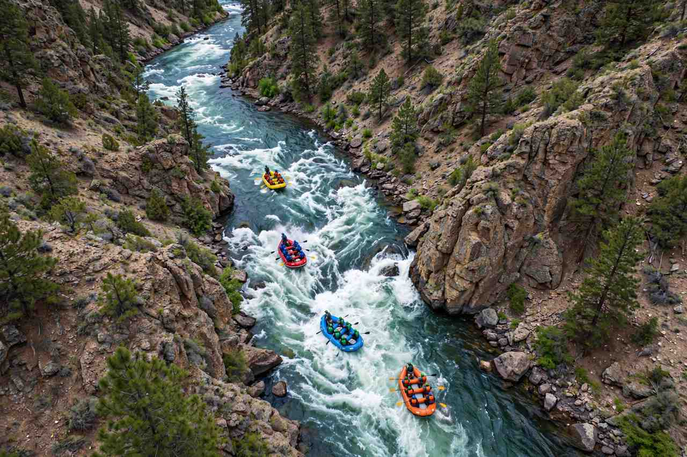

Rapids White Water Rafting

At Rapids, our purpose is to bring adventure and unforgettable memories to
everyone who loves the river. Our mission is to provide safe, thrilling, and
eco-friendly rafting experiences that connect people with nature. We believe in
teamwork, respect for the river, and joy through adventure. Our motto is Ride
the Rapids, Live the Adventure!
History
Rapids was founded in 1998 by a group of river enthusiasts who shared a passion for
white water adventure. Starting with a single raft and a dream, we have grown into a
trusted rafting company in the region.

Over the years we have guided thousands of adventurers through breathtaking rapids,
always prioritizing safety and fun while preserving our natural waterways for future
generations.